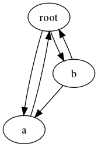

copy – オブジェクトのコピー¶
| 目的: | 浅いコピー(shallow copy)や深いコピー(deep copy)でオブジェクトをコピーする関数を提供する |
|---|---|
| 利用できるバージョン: | 1.4 |
copy モジュールは既存のオブジェクトをコピーする copy() と deepcopy() の2つの関数を提供します。
浅いコピー¶
copy() 関数が作成する浅いコピーは、元のオブジェクトのコンテンツへの参照をもつコンテナです。例えば、新しいリストが作られて、元のリストの要素がそのリストへ加えられます。
import copy
class MyClass:
def __init__(self, name):
self.name = name
def __cmp__(self, other):
return cmp(self.name, other.name)
a = MyClass('a')
l = [ a ]
dup = copy.copy(l)
print 'l :', l
print 'dup:', dup
print 'dup is l:', (dup is l)
print 'dup == l:', (dup == l)
print 'dup[0] is l[0]:', (dup[0] is l[0])
print 'dup[0] == l[0]:', (dup[0] == l[0])
浅いコピーでは、MyClass のインスタンスはコピーされません。そのため、dup リストのオブジェクトの参照先は l リストのオブジェクトと同じです。
$ python copy_shallow.py
l : [<__main__.MyClass instance at 0x100468cf8>]
dup: [<__main__.MyClass instance at 0x100468cf8>]
dup is l: False
dup == l: True
dup[0] is l[0]: True
dup[0] == l[0]: True
深いコピー¶
deepcopy() 関数が作成する深いコピーは、元のオブジェクトのコンテンツのコピーをもつ新しいコンテナです。例えば、新しいリストが作られて、元のリストの要素がコピーされます。それからコピーされた要素が新しいリストへ加えられます。
先程の例において、copy() 関数の呼び出しを deepcopy() に置き換えることにより、その違いは明らかになります。
dup = copy.deepcopy(l)
リストの最初の要素がもはや同じオブジェクトへの参照でないことに注意してください。しかし、2つのオブジェクトはそれでも等しいと評価されます。
$ python copy_deep.py
l : [<__main__.MyClass instance at 0x100468cf8>]
dup: [<__main__.MyClass instance at 0x100468d40>]
dup is l: False
dup == l: True
dup[0] is l[0]: False
dup[0] == l[0]: True
コピーの振る舞いの制御¶
__copy__ と __deepcopy__ フックを使用して、コピーする方法を制御することができます。
- __copy__() は引数なしで呼び出され、オブジェクトの浅いコピーを返します。
- __deepcopy__() はメモディクショナリと共に呼び出され、オブジェクトの深いコピーを返します。深いコピーが行われる全てのメンバ属性は、再起を制御するためにメモディクショナリと共に copy.deepcopy() へ渡されます。(以下を参照)
以下の例はどのようにメソッドが呼び出されるかを示しています。
import copy
class MyClass:
def __init__(self, name):
self.name = name
def __cmp__(self, other):
return cmp(self.name, other.name)
def __copy__(self):
print '__copy__()'
return MyClass(self.name)
def __deepcopy__(self, memo):
print '__deepcopy__(%s)' % str(memo)
return MyClass(copy.deepcopy(self.name, memo))
a = MyClass('a')
sc = copy.copy(a)
dc = copy.deepcopy(a)
$ python copy_hooks.py
__copy__()
__deepcopy__({})
深いコピーにおける再帰¶
再帰的なデータ構造のコピーによる問題を避けるために deepcopy() 関数は既にコピーされたオブジェクトを保持するディクショナリを使用します。このディクショナリは __deepcopy__() メソッドに渡されるので、そこでも同様に使用されます。
この例は __deepcopy__() メソッドを実装することにより、有向グラフのような相互に連結されたデータ構造が再起に対して保護し易くする方法を説明します。デフォルトの deepcopy() 実装が再起のデータ構造を正しく扱うので、この例はただ説明目的だけのものです。
import copy
import pprint
class Graph:
def __init__(self, name, connections):
self.name = name
self.connections = connections
def addConnection(self, other):
self.connections.append(other)
def __repr__(self):
return '<Graph(%s) id=%s>' % (self.name, id(self))
def __deepcopy__(self, memo):
print
print repr(self)
not_there = []
existing = memo.get(self, not_there)
if existing is not not_there:
print ' ALREADY COPIED TO', repr(existing)
return existing
pprint.pprint(memo, indent=4, width=40)
dup = Graph(copy.deepcopy(self.name, memo), [])
print ' COPYING TO', repr(dup)
memo[self] = dup
for c in self.connections:
dup.addConnection(copy.deepcopy(c, memo))
return dup
root = Graph('root', [])
a = Graph('a', [root])
b = Graph('b', [a, root])
root.addConnection(a)
root.addConnection(b)
dup = copy.deepcopy(root)
まず初めに、基本的な有向グラフのメソッドについて見てみましょう。グラフは名前とそのグラフが連結される既存のノードリストで初期化されます。addConnection() メソッドは双方向に連結するために使われます。またそれは deepcopy 演算子により使用されます。
__deepcopy__() メソッドは、どのようにして呼び出されるかを示すためにメッセージを表示して、必要に応じてメモディクショナリを管理します。連結のリスト全てをコピーせずに、新しいリストを作成し、個々の連結のコピーをそこに加えます。それぞれのノードがコピーされると、メモディクショナリが更新されることを保証します。そして、再帰の問題やノードの追加コピーを避けます。前のセクションで説明したように、終了時にコピーされたオブジェクトを返します。
次に root, a, b のノードをもつグラフを用意します。グラフは次のようなものです。

グラフ内の参照先が循環しますが、メモディクショナリでその再帰処理を扱うことでスタックオーバーフローエラーを発生させないようにします。 root ノードがコピーされるときは以下のようになります。
$ python copy_recursion.py
<Graph(root) id=4299643648>
{ }
COPYING TO <Graph(root) id=4299644008>
<Graph(a) id=4299643720>
{ <Graph(root) id=4299643648>: <Graph(root) id=4299644008>,
4298518192: ['root'],
4299576544: 'root'}
COPYING TO <Graph(a) id=4299644080>
<Graph(root) id=4299643648>
ALREADY COPIED TO <Graph(root) id=4299644008>
<Graph(b) id=4299643792>
{ <Graph(root) id=4299643648>: <Graph(root) id=4299644008>,
<Graph(a) id=4299643720>: <Graph(a) id=4299644080>,
4297844216: 'a',
4298518192: [ 'root',
'a',
<Graph(root) id=4299643648>,
<Graph(a) id=4299643720>],
4299576544: 'root',
4299643648: <Graph(root) id=4299644008>,
4299643720: <Graph(a) id=4299644080>}
COPYING TO <Graph(b) id=4299644584>
root ノードが2回目に出てきたとき a ノードはコピーされているので、 __deepcopy__ は再帰を検知し、新しいオブジェクトを作成せずにメモディクショナリから既存の値を再利用します。
See also
- copy
- 本モジュールの標準ライブラリドキュメント